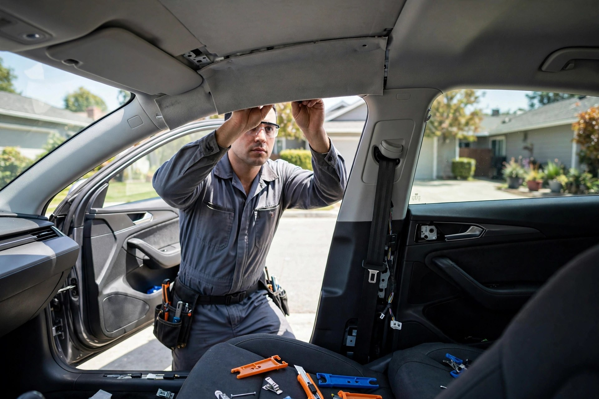
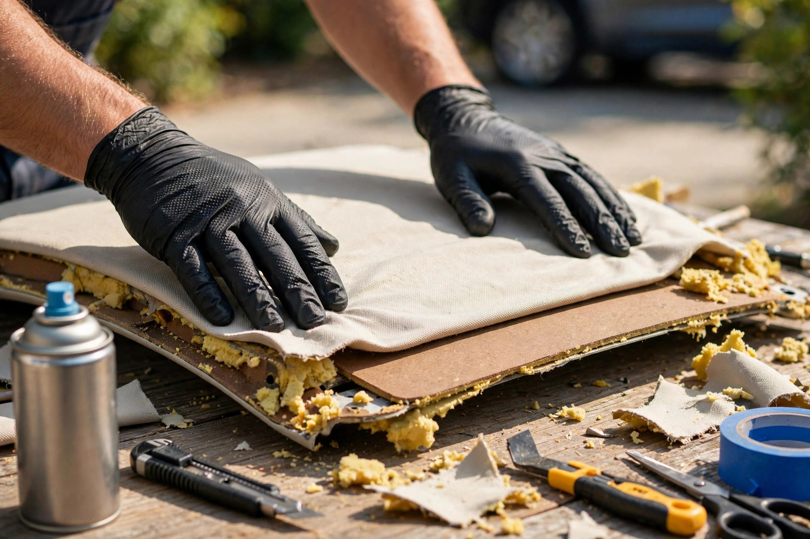
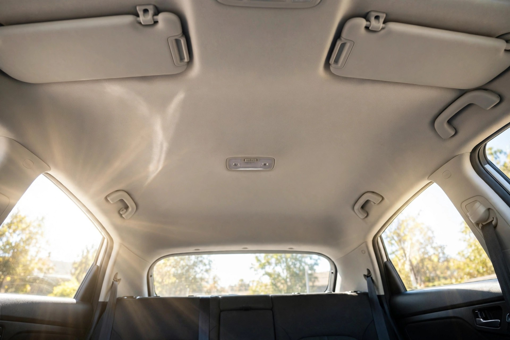
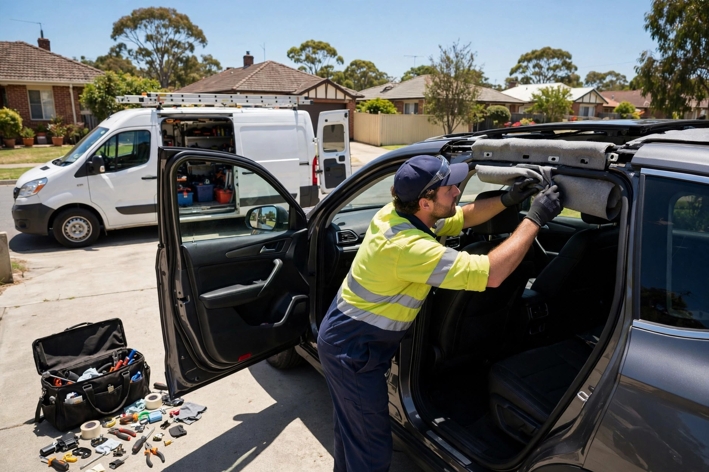

Roof lining replacement
Sagging or fallen headliner recovered with new top-grade fabric — cut and fitted to your exact roof.

Oxley, Brisbane · Mobile roof lining specialists
Rated 4.1/5 from 135 reviews on ProductReview.com.au — we come to your home or work and replace your car's roof lining in about two hours.
Price promise
Send us a quote you've already received and we'll beat it — free quotes, top-grade materials, done at your door.
What we do
Sagging or fallen headliner recovered with new top-grade fabric — cut and fitted to your exact roof.
We come to your home or workplace — no dropping the car off and waiting around.
Roof linings carefully finished around sunroofs — no shortcuts, no peeled edges.
Sagging door trims with carpet panels repaired on site, alongside your roof lining.
Cars, utes and SUVs of every brand — the material is matched to your factory finish.
Free, accurate quotes — and we'll beat any written quote you've already got.

Why choose us
We're a Brisbane-based mobile crew that's done roof linings for over 10 years. The old lining comes out, the board is cleaned and prepped, and new fabric goes on with high-quality adhesive — matched to your factory finish.
Our work


Word on the street
Good to know
Most cars take about 1.5 to 2 hours. Cars with sunroofs or extra fittings can take a little longer — we'll give you an accurate time with your quote.
No — that's the whole point. We come to your home or workplace and do the repair there while you get on with your day.
We're based in Oxley, Brisbane, and cover Brisbane, the Gold Coast and the Sunshine Coast.
Yes — we finish linings around sunroofs properly, with the edges wrapped so the fabric won't start peeling from the edge like the factory ones do.
Get in touch